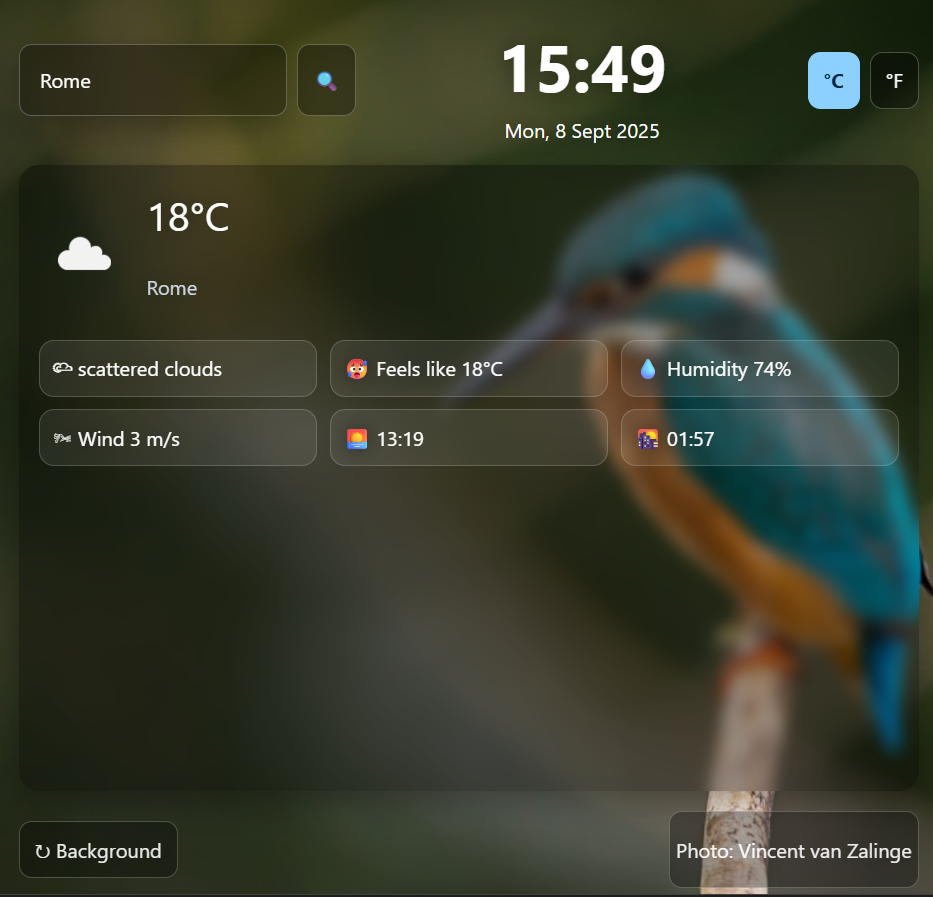

HTML5 | CSS3 | JavaScript (ES6+)
Weather Dashboard with Live Backgrounds is a browser-based weather application that shows the current time, date, and live weather conditions for any city or the user’s current location. It also updates the background automatically with random nature photography from Unsplash, giving the app a fresh look every session.
The base idea came from a Scrimba project which I later upgraded and extended as my knowledge progressed. Users can search weather by city or allow geolocation to detect their area, switch between Celsius and Fahrenheit, and view extra details like humidity, wind speed, sunrise, and sunset. They can also refresh the background image for a new scenic look.
This project emphasizes skills in JavaScript such as DOM manipulation, working with the fetch API, async/await handling, and localStorage state management. It also demonstrates responsive UI design and the integration of multiple APIs including OpenWeather (via Scrimba) and Unsplash.